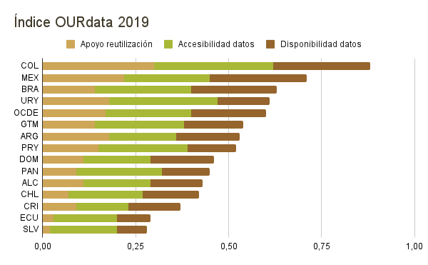
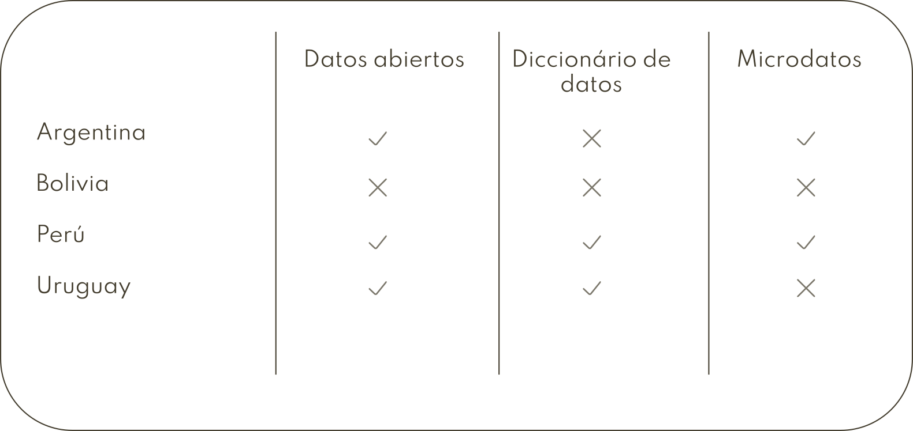

Análisis exploratorio de datos: tecnología social y gobiernos democráticos
Sumario
Datos abiertos
Datos abiertos son datos digitales puestos a disposición con las características técnicas y jurídicas necesarias para que puedan ser usados, reutilizados y redistribuidos libremente por cualquiera, en cualquier momento y en cualquier sitio.
Estamos hablando de información no personal, es decir, datos que no contienen información sobre individuos específicos y de datos gubernamentales que no tienen restricciones nacionales de seguridad.
Los datos abiertos permiten a los gobiernos, ciudadanas y organizaciones de la sociedad civil y del sector privado tomar mejores decisiones informadas, basadas en evidencias. El acceso eficaz y oportuno a los datos nos ayuda a desarrollar nuevos hallazgos e ideas innovadoras que pueden generar beneficios sociales y económicos, para mejorar nuestras vidas. Además generan una mayor interacción entre los gobiernos y los ciudadanos, y permiten oportunidades de co-creación.
Los datos abiertos permiten a las usuarias comparar, combinar y seguir las conexiones entre distintos conjuntos de datos. Cuando se puede hacer esto efectivamente, es posible resaltar las tendencias, identificar desafíos, inequidades económicas y sociales, así como referenciar avances en los programas y servicios públicos.
Un ejemplo muy cercano a nosotras es la lucha colectiva contra la pandemia. Pudemos acompañar en tiempo real la situación en cada país, administrar los recursos destinados a enfrentar el COVID-19, y diseñar herramientas tecnológicas que útiles para la crisis y que sirvem de soporte a las acciones en el corto plazo.
Construir una sociedad más próspera, equitativa y justa requiere gobiernos transparentes, que rindan cuentas, y que colaboren de manera regular y significativa con la sociedad. En este sentido, existe una revolución global de datos que busca avanzar la colaboración en torno a los desafíos sociales claves, proporcionar una supervisión eficaz de las actividades gubernamentales, apoyar la innovación, el desarrollo económico sostenible y la creación y expansión de políticas públicas eficientes y efectivas.
Los datos abiertos son uno de los ejes para lograr un Gobierno Abierto y democrático.
Panorama de los datos abiertos en América Latina y Caribe
En nuestra región empezamos hace unos años los esfuerzos para incentivar gestiones más participativas. En 2011 gobiernos de todo el mundo y representantes de la sociedad civil se unieron para crear la Alianza para el Gobierno Abierto, con el objetivo de promover una gobernanza transparente, participativa, inclusiva y responsable. Actualmente, 16 países de América Latina y Caribe son miembros de esta Alianza.
En 2015 fue creada la Carta internacional de Datos Abiertos con participación del grupo de trabajo de Datos Abiertos de la Alianza, sociedad civil y personas expertas. La carta tiene 6 principios para los datos:
- Abiertos por defecto
- Oportunos y Exhaustivos
- Accesibles y Utilizables
- Comparables e Interoperables
- Para mejorar la Gobernanza y la Participación Ciudadana
- Para el Desarrollo Inclusivo y la Innovación
Hoy en día, tenemos dos publicaciones que usan esta Carta como soporte para analizar el nível de apertura de los datos en los gobiernos:
- Open Data Barometer: producido por el World Wide Web Foundation, es una medida global de cómo los gobiernos publican y utilizan datos abiertos para la rendición de cuentas, la innovación y el impacto social;
- OURdata Index: producido por la OCDE, este índice realiza un análisis comparativo del diseño y la implementación de políticas de datos abiertos gubernamentales.
Enfocaremos en el OURdata Index, pues tiene la información que deseamos y es usado como base para el Panorama de las Administraciones Públicas de América Latina y el Caribe, que detallaremos en un momento.
Índice de datos abiertos, útiles y reutilizables (OURdata Index)
Tiene el objetivo de medir el nivel de disponibilidad, accesibilidad y apoyo gubernamental para la reutilización de datos basados en los principios de la Carta Internacional de Datos Abiertos. Está compuesto por 3 indicadores: disponibilidad de datos, accesibilidad de datos y apoyo del gobierno a la reutilización de datos. El puntaje de cada país varía entre 0 y 1, siendo que cada indicador tiene el mismo peso, 0.33.
Con este índice es posible comparar los niveles de abertura de datos (los puntajes) entre los países de América Latina y Caribe y los miembros de la OCDE. En promedio, los países de latinoamerica obtuvieron 0,43 puntos, mientras el promedio de los paises de la OCDE fue 0,60.
Sin embargo, existe un evidente contraste en los niveles de desarrollo acerca de los datos abiertos gubernamentales entre los países de América Latina. Colombia (0,88), México (0,71) y Brasil (0,63) lideran la región con puntajes más altos que el promedio de la OCDE.

Panorama de las Administraciones Públicas de América Latina y el Caribe
Es una publicación que cubre aspectos claves de la gobernanza pública y permite a los formuladores de políticas y a la sociedad analizar el desempeño de los gobiernos de América Latina y Caribe en comparación con los países de la OCDE. Uno de los aspectos que tienen en cuenta son “datos abiertos gubernamentales”, lo cual usa como base el OURdata Index.
El Panorama fue publicado en 2020 y es la publicación más reciente acerca del análisis de los datos abiertos públicos de latinoamerica. Fue producido por la OCDE (Organización para la Cooperación y el Desarrollo Económicos), una organización que agrupa a 38 países con la misión de promover políticas que mejoren el bienestar económico y social de las personas; y por el BID (Banco Interamericano de Desarrollo), que es la principal fuente de financiamiento para el desarrollo de América Latina y el Caribe, además ayuda a mejorar vidas al brindar soluciones financieras y conocimientos sobre el desarrollo para clientes del sector público y el privado.
Este Panorama informa que el 81% de los países en América Latina y Caribe cuentan con una estrategia de mediano plazo y el 75% tiene un plan de acción nacional que incluye implementación de portales y publicación de datos abiertos. En cuanto a participación ciudadana, la mitad de los países latinoamericanos tienen programas gubernamentales para apoyar el conocimiento sobre datos abiertos gubernamentales entre las organizaciones de la sociedad civil. Sin embargo, esta proporción es inferior a los países de la OCDE, donde el 75% de los gobiernos los tienen.
Aunque la agenda de datos abiertos ha despegado en nuestra región, aún hay margen de mejora. En consonancia con el Open Data Barómetro, los análisis muestran que los gobiernos todavía tratan los datos abiertos como iniciativas aisladas. O sea, deberíamos priorizar e invertir en la gobernanza de datos abiertos para respaldar los cambios sustanciales necesarios para incorporar un enfoque abierto en todos los ámbitos y estimular la participación ciudadana en las políticas y programas gubernamentales.
La democracia en América Latina y Caribe abarca mucho más que las elecciones, de acuerdo con el proyecto LATINNO, en los últimos años estamos convirtiéndonos en un laboratorio de innovaciones políticas y de gobernanza participativa. Mucho se da por la transparencia de datos gubernamentales, aunque nos quede mucho por hacer.
Análisis exploratório de datos
Hasta aquí hemos visto la importancia de los datos abiertos gubernamentales para desarrollo de innovación y una gestión más participativa, también echamos un vistazo en el panorama de América Latina acerca del nivel de apertura de los datos y políticas de los gobiernos acerca del tema. Ahora podremos las manos en la masa… ops.. en los datos.
La ideia del análisis es enseñar un poquito de Pandas y ser un ejemplo de lo qué podemos hacer con datos abiertos, presentar para vosotras la potencia de este recurso y instigar vosotras a utilizarlos sea para desarrollar nuevas tecnología que mejore la vida de su comunidad o cobrar al gobierno.
Elegí para nuestro análisis, los datos de vacunación contra COVID-19 de algunos países de América Latina. Si quieres, puedes profundizarlo cogiendo datos de todos los países de la región.
Datos de vacunación contra el COVID-19
Busqué los datos de Argentina, Bolívia, Perú y Uruguay, sin embargo no encontré los datos de vacunación contra el COVID-19 en las páginas del gobierno de Bolívia. En Uruguay, encontré los datos, pero su granularidad estava muy alta, o sea, todas las cantidades ya estavan agrupadas. Por lo tanto, descarté dos países del análisis.

La documentación de los datos (diccionario de datos) es muy importante para nosostras hacer análisis fiables, pues detalla el contenido de cada columna, además de ser útil en el preprocessamiento de datos cuando trae las informaciones de encoding, los tipos de datos de cada columna, etc.
Por fin, quedamos con los datos de Argentina (datos) y Perú (datos).
Notebook del análisis
Usamos el Google Collab para desarrollar el análisis, lo cual está disponível en este enlace.
Referencias
- Datos abiertos en gobiernos de América Latina y el Caribe: ¿cómo avanzamos?, 2020
- Datos abiertos y Coronavirus: El valor de la información para luchar colectivamente contra la pandemia, 2020
- Flourish Studio
- Informe: de la promesa al progresso, 2018
- Los datos abiertos en América Latina y el Caribe, 2018
- Open Data Barometer, 3.ed
- Panorama de las Administraciones Públicas: América Latina y el Caribe 2020
- Panorama regional de los datos abiertos: avances y desafíos en América Latina y el Caribe, 2016
- ¿Qué son los datos abiertos?
Organizaciones que promueven uso de la tecnología para el fortalecimiento de las democracias
- Aúna
- Cívica Digital
- Codeando México
- Ciudadanía inteligente
- Data Cívica
- ILDA
- Instituto Cidade Democrática
- Instituto de Tecnologia e Sociedade
- Latinno
- Open Knowledge Brasil
Este texto son los apuntes de la charla “Análisis exploratorio de datos: tecnología social y gobiernos democráticos” que presenté en PyCon Latam 2021. Recursos:
-----